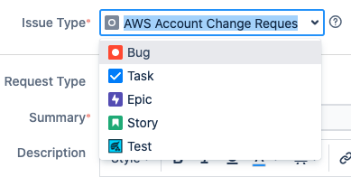
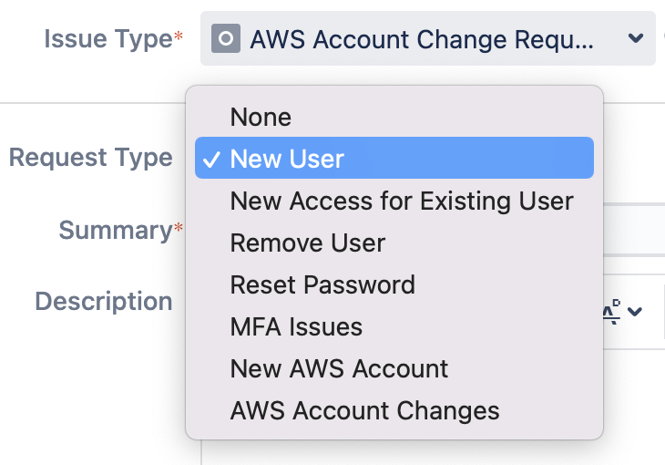
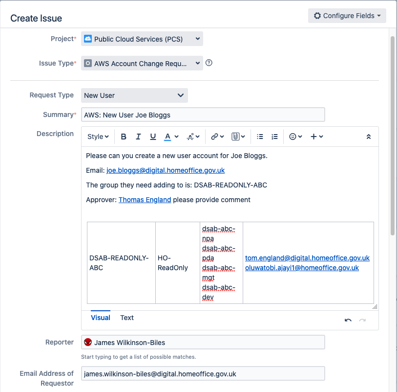
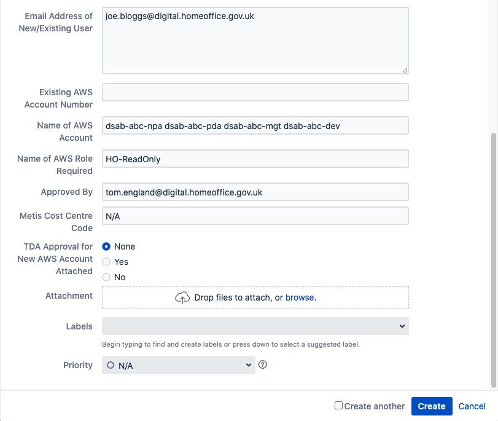

How to create an AWS IAM ticket
New user request requirements
The following points are a requirment before creating a new user request:
- if you are are raising a ticket on a non-POISE email address, you will need to add your GPG key
- a GPG key is not required using a POISE email address
- the name of group(s) you would like to be added to
- as group names are all unique, this informs what roles and accounts you want access to
- attach an approver from the approvers list
Creating an AWS IAM ticket
Things to remember when creating an Amazon Web Services (AWS) Identity and Access Management (IAM) ticket:
- provide as much detail as possible for each ticket
- failing to give us enough information could result in a delay in your request
- the Cloud Vending Team will only be able to work from the information you provide in the ticket, it is not our responsibility nor is it secure or appropriate for us to guess what is required
Once your AWS IAM ticket has been actioned by the Cloud Vending Team, there is information available on what to do next for new users.
Below is an example of how to create a ticket requesting access for a new user in the cloud. However, the same steps can be applied to all the ticket types.
- Visit the Jira Kanban board and click the ‘Create’ button in the top right corner.
- Select ‘AWS Account Change Request’ as the issue type. This is used for all AWS IAM tickets. 
- Choose the appropriate ticket type. Is this for a new user to get access to the cloud, have you forgotten your password or are you an existing user and want to get access to the sandbox. You would select ‘New Access for Existing User’ in the last example. 
- Please fill in as much useful details as possible as this will help us complete the ticket as quick as we can. See the example below for a new user request.
- Once your ticket has been raised, a member of the Cloud Vending Team will pick up the ticket and notify you when it has been completed.
- If a member of the Cloud Vending Team comments on the ticket requesting more information, and you do not reply within 7 business days, the ticket will be commented on again and progressed into ‘Done’. You can still comment on the ticket afterwards.
Most ticket types require approval but if you are unsure that you need approval, please see Account roles and approvers.
When adding an approver you must make sure to add them into the description field. You need to tag an approver by typing e.g. @Thomas (see screen shot below). As you start typing a list of names will appear.
If the user you are requesting a new account for, or a password reset for, has an ‘@digital.homeoffice.gov.uk’ email address you must provide us with their GPG key. We need this to encrypt their credentials before sending them out.
 Back to top